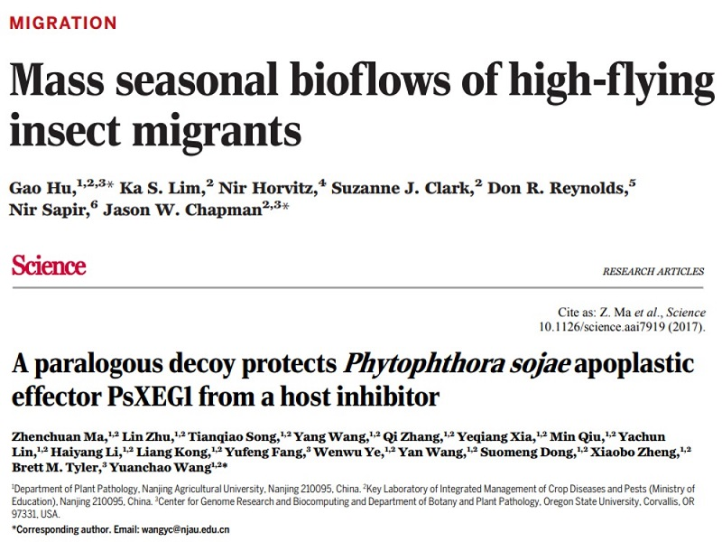

全国经济总览
手机端请横置显示全图
三大产业生产总值
2011~2021年三大产业生产总值
第一产业生产总值占比
9.18% (2011) → 7.26% (2021)
第一产业生产总值
44781 (亿元,2011) → 83085 (亿元,2021)
三大产业从业人员人数
2011~2020年三大产业就业人员数量(2021年数据缺失)
第一产业就业人员占比
36.68% (2011) → 23.6% (2020)
第一产业就业人员数量
26472 (百万,2011) → 17715 (百万,2020)
三大产业固定资产
2011~2021年三大产业固定资产数额
第一产业固定资产占比
1.62% (2011) → 2.62% (2021)
第一产业固定资产数额
3712 (亿元,2011) → 14275 (亿元,2021)
农林牧渔业总产值
2011~2020年农林牧渔业总产值(2021年数据缺失)
农业总产值
40339 (亿元,2011) → 71748 (亿元,2020)
牧业总产值
25194 (亿元,2011) → 40266 (亿元,2020)
SCI/SSCI论文数量(中国学者)
农业学科10年SCI(图片可点击,右同)
农林高校10年SCI(完整名单见下)
{kind=link}
{kind=link}
{kind=link}
{kind=link}
{kind=link}
{kind=link}
{kind=link}
{kind=link}
{kind=link}
南农人物
从2012年至2021年，南农人一直是祖国农业发展建设路上的中流砥柱。
南农十年重大进展
从2012年至2021年，南农为建成世界一流农业大学付出了巨大的努力。
南农110周年华诞 世界最大笑脸
南京农业大学水稻育种研究成果 科技让水稻增产
冷却肉品质控制关键技术 吃得饱，吃得好
ESI农业科学学科进入全球前1‰ 农学排名再创新高
南农一个月内连续在科学杂志发文 监测虫与病的雷达
2016年，短短一个月内，《Science》连续刊登南京农业大学植物保护学院关于昆虫迁飞和作物疫病发生机制的两篇研究性论文，这是我校首次以第一通讯单位在Science发文。
盖钧镒获大豆领域终身成就奖 中国大豆的守护者
我校隆重举行新校区奠基仪式 你好，新校区
67位南农人获70周年纪念章 新中国路上的南农人
研究成果入选农业科学重大进展 把论文写在大地上
常见问题
以下是本作品常见问题总结和免责声明
-
本作品使用了哪些素材？
本作品布局思路借鉴此网站部分模板(https://bootstrapmade.com/)，部分页面布局基于Bootstrap 5组件库(https://github.com/twbs/bootstrap)，动画效果基于AOS组件库(https://github.com/michalsnik/aos)，lightbox效果基于glightbox插件(https://github.com/biati-digital/glightbox)，timeline效果基于此案例(https://codepen.io/paulhbarker/pen/apvGdv)，交互图基于echarts库(https://github.com/apache/echarts)，数据请求基于Jquery框架(https://github.com/jquery/jquery)，数据前处理基于python 3.7的pandas模块(https://github.com/pandas-dev/pandas)，基础静态图基于python 3.7的matplotlib模块(https://github.com/matplotlib/matplotlib)。
-
本作品数据来源？
本作品论文统计数据基于web of science(http://webofscience.com)的SCI和SSCI数据库进行检索，检索条件：address设为china，affiliation设为各高校英文名，date-range设为2011/01/01~2021/12/31。年度统计数据来源于国家统计局(https://data.stats.gov.cn/)，时间为最近20年。
本作品部分图片来源于南京农业大学官网(http://www.njau.edu.cn)
-
可能遇到的BUG
1、本作品基于AJAX获得绘图数据，若项目文件下载到本地，可能存在跨域问题。解决方法如下：
a：使用火狐浏览器;b：调用IDE的server插件启动本项目(比如sublime的sublimeserver);c：配置本地服务器
2、本作品动态条形图设置了计时器，请不要反复点击动态图片，避免卡顿现象和内存溢出问题。
3、本作品渲染效果未完全兼容移动端，且可能存在未知BUG，请使用PC端浏览器获得更好的浏览体验。
4、本作品CSS渲染效果不能完全兼容所有浏览器，尽量基于高版本的edge或chrome浏览器浏览本作品。
5、本作品页面缩放后可能会存在定位不准问题，请保证页面100%显示。
6、页面渲染出错的可能原因时网络波动，请保证信号畅通时刷新本页面。
-
免责声明
该作品所用素材均在素材使用许可范围内，本人声明该作品仅限用于南京农业大学研究生网络文化节 “我们这十年”活动。
本作品严禁他人用于其他活动或进行私自转载。若存在前述行为，其产生的未知侵权后果由侵权者自行承担。